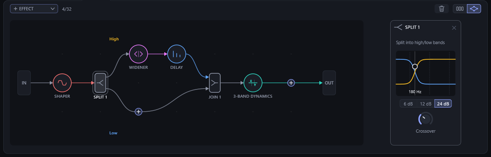

<title>Split Container Drafts</title>
<meta name="claude:viewport-fit-sides" content="cover">
<link rel="preconnect" href="https://fonts.googleapis.com">
<link rel="preconnect" href="https://fonts.gstatic.com" crossorigin>
<link rel="stylesheet" href="https://fonts.googleapis.com/css2?family=Archivo:wdth,wght@112,600;112,700&family=IBM+Plex+Mono:wght@400;500&family=IBM+Plex+Sans:wght@400;500;600&family=Noto+Sans:wght@400;600;700&display=swap">
<style>
/* Layout: one reading column of notes, the mockups breaking out to the editor's own 1184 px FX panel width. */
:root {
  --ground: #0b0d11;      /* page, a shade under the plugin's background */
  --sheet: #12151b;       /* figure wells */
  --ink: #e8ebf2;         /* the plugin's text */
  --ink-dim: #8d94a5;     /* the plugin's dim */
  --rule: #272c36;        /* the plugin's border */
  --accent: #8ea2ff;      /* the plugin's accent */
  --low: #60a5fa;
  --high: #fbbf24;
  --note: #ff8fb1;        /* annotation marks, kept off the plugin's palette */
  --display: "Archivo", "Helvetica Neue", Arial, sans-serif;
  --body: "IBM Plex Sans", "Segoe UI", system-ui, sans-serif;
  --mono: "IBM Plex Mono", ui-monospace, "Cascadia Mono", Consolas, monospace;
  color-scheme: dark;
}
body { background: var(--ground); color: var(--ink); font-family: var(--body); font-size: 15px; line-height: 1.6;
  padding-left: max(16px, env(safe-area-inset-left, 0px)); padding-right: max(16px, env(safe-area-inset-right, 0px));
  padding-block: 40px 72px; }
main { max-width: 1216px; margin: 0 auto; display: flex; flex-direction: column; gap: 56px; }
header { display: flex; flex-direction: column; gap: 14px; max-width: 72ch; }
.eyebrow { font-family: var(--mono); font-size: 12px; letter-spacing: .08em; text-transform: uppercase; color: var(--ink-dim); }
h1 { font-family: var(--display); font-stretch: 112%; font-weight: 700; font-size: clamp(30px, 5vw, 46px); line-height: 1.05; margin: 0; text-wrap: balance; letter-spacing: -.01em; }
h1 .lo { color: var(--low); } h1 .hi { color: var(--high); }
h2 { font-family: var(--display); font-stretch: 112%; font-weight: 600; font-size: 22px; margin: 0; text-wrap: balance; }
h3 { font-size: 15px; font-weight: 600; margin: 0; }
p { margin: 0; }
.lede { font-size: 17px; color: #c9cedb; }
section { display: flex; flex-direction: column; gap: 18px; }
.prose { max-width: 72ch; display: flex; flex-direction: column; gap: 12px; }
figure { margin: 0; display: flex; flex-direction: column; gap: 10px; }
.shot { overflow-x: auto; background: var(--sheet); border: 1px solid var(--rule); border-radius: 12px; padding: 10px; }
.shot svg, .shot img { display: block; width: 100%; min-width: 760px; height: auto; }
.shot.tight svg { min-width: 420px; }
figcaption { font-size: 13.5px; color: var(--ink-dim); max-width: 90ch; }
figcaption b { color: var(--ink); font-weight: 600; }
.tag { font-family: var(--mono); font-size: 12px; color: var(--ink); background: #1f232c; border: 1px solid var(--rule); border-radius: 4px; padding: 1px 6px; white-space: nowrap; }
.pair { display: grid; grid-template-columns: repeat(auto-fit, minmax(min(100%, 520px), 1fr)); gap: 24px; align-items: start; }
.pair > * { min-width: 0; }
ol.marks { margin: 0; padding: 0; list-style: none; display: flex; flex-direction: column; gap: 10px; counter-reset: m; }
ol.marks li { display: grid; grid-template-columns: 26px 1fr; gap: 10px; align-items: start; }
ol.marks li::before { counter-increment: m; content: counter(m); font-family: var(--mono); font-size: 12px; font-weight: 500; color: #0b0d11; background: var(--note); border-radius: 50%; width: 22px; height: 22px; display: grid; place-items: center; margin-top: 1px; }
.tablewrap { overflow-x: auto; border: 1px solid var(--rule); border-radius: 10px; }
table { border-collapse: collapse; width: 100%; font-size: 14px; min-width: 680px; }
th, td { text-align: left; vertical-align: top; padding: 10px 14px; border-bottom: 1px solid var(--rule); }
th { font-family: var(--mono); font-weight: 500; font-size: 12px; letter-spacing: .06em; text-transform: uppercase; color: var(--ink-dim); background: #12151b; }
tr:last-child td { border-bottom: 0; }
td code, p code, li code { font-family: var(--mono); font-size: 12.5px; color: #c7cffc; }
ul.dense { margin: 0; padding-left: 20px; display: flex; flex-direction: column; gap: 7px; }
ul.dense li::marker { color: var(--ink-dim); }
.callout { border-left: 3px solid var(--accent); background: #12151b; border-radius: 0 10px 10px 0; padding: 14px 18px; display: flex; flex-direction: column; gap: 8px; max-width: 90ch; }
.qs { display: grid; grid-template-columns: repeat(auto-fit, minmax(min(100%, 340px), 1fr)); gap: 14px; }
.q { border: 1px solid var(--rule); border-radius: 10px; padding: 14px 16px; display: flex; flex-direction: column; gap: 6px; background: #101318; }
.q .pick { font-size: 13px; color: var(--ink-dim); }
.q .pick b { color: var(--accent); font-weight: 600; }
@media (prefers-reduced-motion: no-preference) { .shot { transition: border-color .2s; } .shot:hover { border-color: #3a404d; } }
</style>

<main>
  <header>
    <span class="eyebrow">FMVibe · FX view · UI drafts · builds on PR #37</span>
    <h1>The frequency split as a container card in the chain: <span class="lo">low</span> / <span class="hi">high</span></h1>
    <p class="lede">In the chain view, a split from the effects graph shows as one card that holds its bands. A grey column at its left picks the band and sets the crossover and the two band levels. Beside it are the shown band's effect cards and a placeholder that adds an effect to that band. It shows the same data the graph shows, so switching between Chain and Graph keeps every split and join.</p>
  </header>

  <section id="look">
    <figure>
      <div class="shot" id="fig-high"></div>
      <figcaption><b>1 · The high band shown.</b> The patch from PR #37's screenshot: a Shaper, then Split 1 at 180 Hz and 24 dB, with a Widener and a Delay on the high band and nothing on the low band, then a 3-Band Dynamics. The container's grey outline sits 5 px outside the usual card on every side, so the cards inside it line up with the rest of the row at the same top, bottom and height.</figcaption>
    </figure>
    <figure>
      <div class="shot" id="fig-low"></div>
      <figcaption><b>2 · The same split with LOW picked.</b> The low band is empty, so the container holds only its column and the placeholder, and the cards after it glide left. The HIGH tab shows a faint count (2) so a hidden band's effects aren't forgotten. The low curve is the one filled in the crossover display.</figcaption>
    </figure>
  </section>

  <section id="anatomy">
    <h2>Anatomy</h2>
    <div class="pair">
      <figure>
        <div class="shot tight" id="fig-anatomy"></div>
        <figcaption><b>3 · The column, top to bottom</b>, as asked, under a title row the cards' titles line up with.</figcaption>
      </figure>
      <ol class="marks">
        <li><div><h3>Title row (added in this draft)</h3><p>The split's icon, its name (<span class="tag">SPLIT 1</span>, numbered by line order as in the graph), fold and ×. Dragging it moves the whole split, with its bands and join, along the chain. The × removes the split and leaves its bands' effects on the main line, the high band's first, as the graph does. This row isn't in the spec: the container still needs a handle, a name and a way to be removed, and here it lines up with the cards' title rows.</p></div></li>
        <li><div><h3>Band tabs: LOW | HIGH</h3><p>Drawn like the operator page's ENVELOPE / UNISON / SCOPE tabs: names on a line, the shown tab's underline in its band's color (blue for low, amber for high, the graph's band colors). A tab whose band is hidden shows its effect count, faint. The wheel switches tabs, and so does holding a dragged card over a tab.</p></div></li>
        <li><div><h3>Crossover display</h3><p>The split card's display from the graph view: both bands' responses with the shown band's curve filled, and a handle on the crossover that drags across it. A double-click resets it to 250 Hz.</p></div></li>
        <li><div><h3>Slope: 6 | 12 | 24 dB</h3><p>The split card's segmented switch. The wheel steps along it.</p></div></li>
        <li><div><h3>Low · Crossover · High</h3><p>Low and High are the join's band levels (0 dB down to −60 dB, silence), so the chain view has no join card. Crossover is the split's knob. All three take modulation and right-click menus like any knob, and the MODS view still lists them as Split 1 Crossover, Join 1 Low and Join 1 High.</p></div></li>
        <li><div><h3>Grey column and outline</h3><p>A neutral grey: splits and joins are already grey in the graph, because they shape the line rather than the sound. The outline's corners are 11 px against the cards' 8, so the gap between them stays even.</p></div></li>
        <li><div><h3>Add placeholder</h3><p>A narrow dashed card in the shown band's color. A click opens the list of effects (effects only: a split can't go inside a band), and the one picked goes at the band's end.</p></div></li>
      </ol>
    </div>
    <div class="tablewrap">
      <table>
        <thead><tr><th>Measure</th><th>Value</th><th>Why</th></tr></thead>
        <tbody>
          <tr><td>Card inside</td><td><code>171 × 304</code> px, top at <code>kFxTop</code></td><td>Unchanged from the chain, so inner and outer cards share the top, the bottom and the knob rows.</td></tr>
          <tr><td>Container outline</td><td>5 px outside the cards on every side: <code>kFxTop − 5</code> to the cards' bottom <code>+ 5</code></td><td>"Very slightly larger": it fits in the 22 px gap and above the scrollbar.</td></tr>
          <tr><td>Column</td><td>One card place: 171 px of controls plus the 5 px edge</td><td>The first inner card lands on the chain's grid of card places.</td></tr>
          <tr><td>Placeholder</td><td><code>64 × 304</code> px</td><td>Narrower than the chain's dashed card, so an empty band costs little room.</td></tr>
          <tr><td>Column knobs</td><td>Centers at card <code>y + 267</code>, labels at <code>+ 293</code></td><td>The same row as the bottom knobs on the compressor, delay and reverb cards.</td></tr>
          <tr><td>Grey</td><td>Fill <code>#252931</code>, outline <code>#565C69</code> (Midnight)</td><td>New palette entries per theme, close to <code>kDim</code>, the split color, at low strength.</td></tr>
        </tbody>
      </table>
    </div>
  </section>

  <section id="same-data">
    <h2>One patch, two views</h2>
    <div class="prose">
      <p>Here is the patch from figures 1 and 2 in the graph view, as PR #37 draws it. Every part of the container maps to something in the graph, so switching views is only a change of drawing. Nothing gets flattened and nobody is asked to confirm, in either direction.</p>
    </div>
    <figure>
      <div class="shot"></div>
      <figcaption><b>4 · The same data in Graph (PR #37's <code>docs/fx-graph.png</code>).</b> Its Split 1 card holds what the container's column holds, apart from the band levels, which are on Join 1's card here.</figcaption>
    </figure>
    <div class="tablewrap">
      <table>
        <thead><tr><th>Chain view</th><th>Graph view</th><th>Data (PR #37)</th></tr></thead>
        <tbody>
          <tr><td>The container card</td><td>A split node, its two band rows and its join node</td><td>The split's and the sum's <code>Used</code>; wires</td></tr>
          <tr><td>Crossover display, Slope, Crossover knob</td><td>The split's card</td><td><code>SplitParam::Low</code>, <code>SplitParam::Slope</code></td></tr>
          <tr><td>Low and High knobs</td><td>The join's card: its level bars and Low / High knobs</td><td>The levels of the join's two input wires (dB)</td></tr>
          <tr><td>The cards in a band, in order</td><td>The nodes along that band's row</td><td>Wires from the split's band port through the effects into the join</td></tr>
          <tr><td>The cards before and after the container</td><td>The main line</td><td>Wires from IN to OUT</td></tr>
          <tr><td>The band shown (the tab)</td><td>No equivalent (both rows always show)</td><td>Editor layout: one band per split, saved with the patch like the node picked</td></tr>
          <tr><td>No control: see the open questions</td><td>The join's SOLO buttons</td><td><code>SumParam::SoloHigh</code>, <code>SoloLow</code></td></tr>
        </tbody>
      </table>
    </div>
  </section>

  <section id="flows">
    <h2>Building a split in the chain</h2>
    <figure>
      <div class="shot" id="fig-addsplit"></div>
      <figcaption><b>5 · Adding a split.</b> The chain's add menus (the + between two cards, shown here, the dashed card at the row's end and + EFFECT) offer <b>Split into high/low bands</b> after the effects, as the graph's main-line +s do. The split goes in there with both bands empty, and the effects after it stay on the main line after the container.</figcaption>
    </figure>
    <figure>
      <div class="shot" id="fig-addband"></div>
      <figcaption><b>6 · Adding to a band.</b> The placeholder opens the list of effects with no split entry, and the effect picked goes at the end of the shown band. The arrows between a band's cards add an effect at that point in the band, as they do between cards on the main line. The arrow from the column into the band's first card adds one at the band's start.</figcaption>
    </figure>
    <figure>
      <div class="shot" id="fig-drag"></div>
      <figcaption><b>7 · Dragging a card into a band.</b> A card dragged from the main line over the container opens a gap in the shown band, outlined dotted in the band's color, while the cards around it glide aside. Held over the other tab for about 0.4 s, the dragged card switches the band shown. Cards dragged out of a band go back onto the main line the same way. Dragged by its title row, the container moves as one piece, and only between main-line cards, because splits stay on the main line.</figcaption>
    </figure>
  </section>

  <section id="behaviour">
    <h2>Behavior, matched to the graph</h2>
    <ul class="dense prose">
      <li>Every edit in the container is an edit of the graph, one undo step each, and appears in the graph view as it happens: a card moved into a band rewires the band's row, and a band level changes the join's wire level.</li>
      <li>The effects count beside + EFFECT is unchanged: splits and joins don't take any of the 32 effect places. The fourth split is the last; after it, the add menus grey out <i>Split into high/low bands</i>.</li>
      <li>With a split's band shown, + EFFECT still adds at the end of the main line, so the button means the same thing whichever band is shown.</li>
      <li>The bin removes every effect, split and join, asking first, as it does now.</li>
      <li>The container scrolls with the row like a wide card, and a card held at the row's ends scrolls it as now. Folded, it becomes a strip like a folded card: the split icon, the ×, then <i>SPLIT 1</i> down the strip.</li>
      <li>Switching tabs changes the container's width, and the cards after it glide, as they already do when cards move. See the open questions for the alternative.</li>
      <li>Several splits in a row are several containers. A band can't hold a split, as in the graph, so containers never nest.</li>
    </ul>
  </section>

  <section id="architecture">
    <h2>Implementation note: one model, two views</h2>
    <div class="callout">
      <p>Chain and graph become two drawings of the same data. Nothing is stored twice and nothing converts between them.</p>
    </div>
    <ul class="dense prose">
      <li><b>The graph's wires are the only record of the order.</b> The chain view gets its row by walking them: the main line from IN, and each split as a container whose bands it walks from the band port to the join.</li>
      <li><b>Chain or Graph becomes an editor layout field,</b> like the routing panel's Graph | Matrix, instead of an engine mode. The engine always runs the graph, so the switch has nothing to do. PR #37's 3 ms duck when switching and its prompt before flattening splits both go away. PR #37 isn't merged yet, so <code>GlobalParam::FxGraph</code> can become a layout field before it ships.</li>
      <li><b>The chain order params (33400 + place) are read only when loading:</b> a state or preset from before the graph becomes a main line of wires in that order, as PR #37 already does when it switches to the graph. After that the order lives only in the wires.</li>
      <li><b>The editor's rules make both views show everything the editor can build:</b> splits only on the main line, bands as straight lines of effects, and every split with its join. Wires aren't given to hosts, so only a hand-edited preset could break those rules. Loading such a preset should repair it, or let the graph view show it and keep it out of the chain view.</li>
      <li><b>The band shown is the only new state:</b> one value per split (four splits), saved in the editor layout chunk like the node picked.</li>
    </ul>
  </section>

  <section id="questions">
    <h2>Open questions</h2>
    <div class="qs">
      <div class="q"><h3>Solo</h3><p>The spec has no solo, and the graph's join card has one. If a band is soloed from the graph and the chain view shows nothing, the other band goes silent with no visible reason.</p><p class="pick">My recommendation: <b>at least mark a soloed band's tab with an S in its color</b>, and offer Solo on the tab's right-click menu.</p></div>
      <div class="q"><h3>Container width</h3><p>The width follows the shown band (as drafted), so the row stays compact and switching tabs moves the cards after it. The alternative sizes the container for the longer band: nothing moves, but a short band leaves empty space.</p><p class="pick">My recommendation: <b>follow the shown band</b>, with the glide the row already has.</p></div>
      <div class="q"><h3>Title row</h3><p>The spec starts the column at the band tabs. This draft adds a title row above them for dragging, removing and naming the container. The alternative is a label set into the top edge of the outline.</p><p class="pick">My recommendation: <b>keep the title row</b>, because it lines up with the cards' titles.</p></div>
      <div class="q"><h3>Which band a new split shows</h3><p>LOW, the first tab, is drafted. The graph puts the high band first when it flattens.</p><p class="pick">My recommendation: <b>LOW</b>, then the band last picked, saved per split.</p></div>
    </div>
  </section>
</main>

<script>
(() => {
// The Midnight theme's colors (src/gui/theme.h) and the effects' own.
const C = { bg: '#0D0F13', panel: '#161920', raised: '#1F232C', border: '#272C36', track: '#2D323D', knob: '#252A35',
  text: '#E8EBF2', dim: '#8D94A5', faint: '#4A5162', accent: '#8EA2FF', card: '#1A1D25', display: '#101217',
  grey: '#252931', greyLine: '#565C69', greyInset: '#1B1E25', greyRule: '#3A3F4A', note: '#FF8FB1' };
const FX = { shaper: '#F87171', delay: '#60A5FA', djeq: '#FBBF24', peq: '#FB923C', filter: '#C084FC', comp: '#34D399',
  multidyn: '#2DD4BF', reverb: '#818CF8', phaser: '#F472B6', flanger: '#A3E635', freq: '#22D3EE', disp: '#CBD5E1',
  widener: '#E879F9', split: '#8D94A5' };
const BAND = { low: '#60A5FA', high: '#FBBF24' };
const CARD_W = 171, GAP = 22, Y0 = 48, CARD_H = 304, PLACE = CARD_W + GAP;
const placeX = k => 24 + k * PLACE;

const esc = s => String(s).replace(/&/g, '&amp;').replace(/</g, '&lt;');
const at = o => Object.entries(o).filter(([, v]) => v !== undefined && v !== null).map(([k, v]) => `${k}="${v}"`).join(' ');
const R = (x, y, w, h, o = {}) => `<rect ${at({ x, y, width: w, height: h, rx: o.r || 0, fill: o.fill || 'none', 'fill-opacity': o.fop, stroke: o.stroke, 'stroke-width': o.sw, 'stroke-opacity': o.sop, 'stroke-dasharray': o.dash, opacity: o.op })}/>`;
const L = (x1, y1, x2, y2, stroke, sw = 1, o = {}) => `<line ${at({ x1, y1, x2, y2, stroke, 'stroke-width': sw, 'stroke-linecap': 'round', 'stroke-opacity': o.sop, 'stroke-dasharray': o.dash })}/>`;
const P = (d, o = {}) => `<path ${at({ d, fill: o.fill || 'none', 'fill-opacity': o.fop, stroke: o.stroke, 'stroke-width': o.sw, 'stroke-opacity': o.sop, 'stroke-linejoin': 'round', 'stroke-linecap': 'round', 'stroke-dasharray': o.dash, opacity: o.op })}/>`;
const Ci = (cx, cy, r, o = {}) => `<circle ${at({ cx, cy, r, fill: o.fill || 'none', 'fill-opacity': o.fop, stroke: o.stroke, 'stroke-width': o.sw, 'stroke-opacity': o.sop })}/>`;
const T = (x, y, s, o = {}) => `<text ${at({ x, y, 'font-size': o.size || 11, fill: o.fill || C.text, 'font-weight': o.weight, 'text-anchor': o.anchor, 'letter-spacing': o.ls, 'dominant-baseline': 'central', opacity: o.op, 'font-family': o.family })}>${esc(s)}</text>`;
const poly = pts => 'M' + pts.map(p => p[0].toFixed(1) + ' ' + p[1].toFixed(1)).join(' L');

// A knob as the editor draws one: a 270-degree track, the value's arc, the cap and its pointer, the label under it.
function arc(cx, cy, r, a, b) {
  const p = t => [cx + r * Math.sin(t), cy - r * Math.cos(t)];
  const [x0, y0] = p(a), [x1, y1] = p(b);
  return `M${x0.toFixed(2)} ${y0.toFixed(2)} A${r} ${r} 0 ${b - a > Math.PI ? 1 : 0} 1 ${x1.toFixed(2)} ${y1.toFixed(2)}`;
}
function knob(cx, cy, label, v, color = C.accent, o = {}) {
  const r = 13, a0 = -0.75 * Math.PI, a1 = a0 + 1.5 * Math.PI * v;
  let s = P(arc(cx, cy, r, a0, a0 + 1.5 * Math.PI), { stroke: C.track, sw: 3 });
  if (v > 0.005) s += P(arc(cx, cy, r, a0, a1), { stroke: color, sw: 3 });
  s += Ci(cx, cy, r - 4.5, { fill: o.body || C.knob });
  s += L(cx + (r - 11) * Math.sin(a1), cy - (r - 11) * Math.cos(a1), cx + (r - 5.5) * Math.sin(a1), cy - (r - 5.5) * Math.cos(a1), C.text, 1.8);
  if (label) s += T(cx, cy + 27, label, { size: 11, fill: C.dim, anchor: 'middle' });
  return s;
}

// The effects' icons, in an 18 x 14 box.
const ICONS = {
  shaper: 'M1 11 H4 C7 11 6 3 9 3 C12 3 11 11 14 11 H17',
  comp: 'M1 13 L9 6 L17 3',
  peq: 'M1 11 C6 11 7 2 9 2 C11 2 12 11 17 11',
  djeq: 'M3 2 V12 M9 2 V12 M15 2 V12 M1 8 H5 M7 4 H11 M13 10 H17',
  filter: 'M1 4 H8 C11 4 13 7 17 13',
  delay: 'M3 2 V13 M8 6 V13 M13 9 V13',
  reverb: 'M2 1 V13 M5 3 V13 M8 5 V13 M11 7 V13 M14 9 V13 M17 11 V13',
  phaser: 'M1 7 C3 1 5 1 7 7 S11 13 13 7 S17 3 17 5',
  flanger: 'M1 3 L3 11 L5 3 L7 11 L9 3 L11 11 L13 3 L15 11 L17 3',
  freq: 'M1 7 H15 M12 4 L15 7 L12 10 M3 4 V10',
  disp: 'M1 12 H5 V8 H9 V4 H13 V1 H17',
  widener: 'M1 7 L5 3 M1 7 L5 11 M17 7 L13 3 M17 7 L13 11 M9 2 V12',
  multidyn: 'M2 3 H16 M2 7 H16 M2 11 H16 M6 1 V5 M11 5 V9 M8 9 V13',
  split: 'M1 7 H8 L16 2 M8 7 L16 12',
};
const icon = (type, x, y, color) => `<g transform="translate(${x} ${y})">${P(ICONS[type], { stroke: color, sw: 1.6 })}</g>`;
const NAMES = { shaper: 'Shaper', djeq: 'DJ EQ', peq: 'Param EQ', filter: 'Filter', comp: 'Compressor', multidyn: '3-Band Dynamics',
  delay: 'Delay', reverb: 'Reverb', phaser: 'Phaser', flanger: 'Flanger', widener: 'Widener', freq: 'Freq Shifter', disp: 'Phase Disp' };
const OFFERED = ['shaper', 'djeq', 'peq', 'filter', 'comp', 'multidyn', 'delay', 'reverb', 'phaser', 'flanger', 'widener', 'freq', 'disp'];

const chevronLeft = (x, y, c) => P(`M${x + 2} ${y - 4} L${x - 2} ${y} L${x + 2} ${y + 4}`, { stroke: c, sw: 1.5 });
const cross = (x, y, c) => P(`M${x - 4} ${y - 4} L${x + 4} ${y + 4} M${x - 4} ${y + 4} L${x + 4} ${y - 4}`, { stroke: c, sw: 1.5 });
const chevronDown = (x, y, c) => P(`M${x - 4} ${y - 2} L${x} ${y + 2.5} L${x + 4} ${y - 2}`, { stroke: c, sw: 1.5 });
// The arrow between two cards, in the middle of their gap.
const arrow = (x, c = C.faint) => P(`M${x - 2.5} ${Y0 + 147} L${x + 2.5} ${Y0 + 152} L${x - 2.5} ${Y0 + 157}`, { stroke: c, sw: 1.6 });

function listButton(x, y, w, text, color) {
  return R(x, y, w, 22, { r: 5, fill: C.raised, stroke: color, sop: 0.45 }) + T(x + 10, y + 11, text, { size: 11, fill: C.dim }) + chevronDown(x + w - 13, y + 11, C.dim);
}
function well(x, y, w, h) { return R(x, y, w, h, { r: 5, fill: C.display }); }

// An effect card: its frame and title row, then the body its type draws.
function card(x, type, title, w = CARD_W, o = {}) {
  const col = FX[type];
  let s = '';
  if (o.ghost) s += R(x + 4, Y0 + 8, w, CARD_H, { r: 9, fill: '#000', fop: 0.45 });
  s += R(x, Y0, w, CARD_H, { r: 8, fill: C.card, stroke: col, sw: 1.2, sop: o.ghost ? 0.95 : 0.55 });
  s += icon(type, x + 10, Y0 + 10, col);
  s += T(x + 34, Y0 + 17, title, { size: 11, weight: 700, ls: 0.3 });
  s += chevronLeft(x + w - 42, Y0 + 17, C.dim) + cross(x + w - 20, Y0 + 17, C.faint);
  s += (BODY[type] || (() => ''))(x, Y0, w, col);
  return s;
}
const third = (x, w, i) => x + w * (1 + 2 * i) / 6;
const quarter = (x, w, i) => x + w * (1 + 2 * i) / 8;
const BODY = {
  shaper(x, y, w, col) {
    let s = listButton(x + 14, y + 42, w - 28, 'Soft', col) + well(x + 14, y + 74, w - 28, 116);
    const dx = x + 22, dw = w - 44, top = y + 84, bot = y + 180;
    s += L(dx, bot, dx + dw, top, C.faint, 1, { dash: '3 3' });
    const pts = []; for (let i = 0; i <= 40; i++) { const t = i / 40, u = 2 * t - 1; pts.push([dx + t * dw, (top + bot) / 2 - Math.tanh(u * 1.8) / Math.tanh(1.8) * (bot - top) / 2 * 0.88]); }
    s += P(poly(pts), { stroke: col, sw: 2 });
    s += R(x + w / 2 - 15, y + 194, 30, 16, { r: 5, fill: C.raised, stroke: C.border });
    s += P(`M${x + w / 2 - 6} ${y + 202} h12`, { stroke: C.dim, sw: 1.4 }) + Ci(x + w / 2 - 5, y + 202, 3.2, { stroke: C.dim, sw: 1.3 }) + Ci(x + w / 2 + 5, y + 202, 3.2, { stroke: C.dim, sw: 1.3 });
    return s + knob(third(x, w, 0), y + 242, 'Drive', 0.4) + knob(third(x, w, 1), y + 242, 'Output', 0.62) + knob(third(x, w, 2), y + 242, 'Mix', 1);
  },
  comp(x, y, w, col) {
    let s = well(x + 14, y + 44, w - 28, 136);
    s += T(x + 24, y + 58, 'GR 0.0 dB', { size: 10.5, fill: C.faint });
    s += R(x + w - 30, y + 52, 7, 120, { r: 2, fill: C.track });
    s += L(x + 100, y + 52, x + 100, y + 172, C.faint, 1, { dash: '2 3' });
    s += P(`M${x + 24} ${y + 170} L${x + 100} ${y + 90} Q${x + 106} ${y + 84} ${x + 114} ${y + 82} L${x + w - 40} ${y + 70}`, { stroke: col, sw: 2 });
    s += knob(third(x, w, 0), y + 206, 'Threshold', 0.55) + knob(third(x, w, 1), y + 206, 'Ratio', 0.35) + knob(third(x, w, 2), y + 206, 'Knee', 0.4);
    return s + knob(quarter(x, w, 0), y + 267, 'Attack', 0.3) + knob(quarter(x, w, 1), y + 267, 'Release', 0.45) + knob(quarter(x, w, 2), y + 267, 'Makeup', 0.2) + knob(quarter(x, w, 3), y + 267, 'Mix', 1);
  },
  widener(x, y, w, col) {
    let s = well(x + 14, y + 44, w - 28, 136);
    s += T(x + w / 2, y + 58, 'HP 120 Hz  ·  8–22 ms', { size: 10, fill: C.dim, anchor: 'middle' });
    const cx = x + w / 2, cy = y + 124;
    s += P(`M${cx} ${cy - 46} L${cx + 46} ${cy} L${cx} ${cy + 46} L${cx - 46} ${cy} Z`, { stroke: C.border, sw: 1 });
    s += L(cx, cy - 46, cx, cy + 46, C.border, 1);
    for (let k = 0; k < 3; k++) {
      const pts = []; for (let i = 0; i <= 90; i++) { const t = i / 90 * Math.PI * 2, rr = 1 - 0.18 * k + 0.08 * Math.sin(5 * t + k); pts.push([cx + 50 * rr * Math.sin(t), cy - 22 * rr * Math.cos(t) * (0.8 + 0.2 * Math.cos(2 * t))]); }
      s += P(poly(pts) + ' Z', { stroke: col, sw: 1.1, sop: 0.9 - 0.25 * k, fill: k === 2 ? col : 'none', fop: 0.08 });
    }
    s += knob(x + w * 0.27, y + 206, 'Size', 0.4) + knob(x + w * 0.73, y + 206, 'Width', 0.7);
    return s + knob(x + w * 0.27, y + 267, 'High Pass', 0.3) + knob(x + w * 0.73, y + 267, 'Mix', 1);
  },
  delay(x, y, w, col) {
    let s = well(x + 14, y + 44, w - 28, 108);
    s += T(x + 24, y + 56, '1/8D', { size: 10.5, fill: C.dim }) + T(x + w - 24, y + 56, '120 bpm', { size: 10.5, fill: C.faint, anchor: 'end' });
    s += T(x + 22, y + 74, 'L', { size: 9, fill: C.faint }) + T(x + 22, y + 140, 'R', { size: 9, fill: C.faint });
    s += L(x + 31, y + 66, x + 31, y + 148, C.dim, 2);
    [[52, 20, -1], [75, 9, 1], [98, 4, -1], [121, 2, 1]].forEach(([dx, h, d]) => { s += R(x + dx, d < 0 ? y + 106 - h : y + 106, 3, h, { fill: col, fop: 0.85 }); });
    s += L(x + 32, y + 106, x + w - 22, y + 106, C.border, 1);
    const bw = (w - 28) / 3;
    for (let i = 0; i < 3; i++) s += R(x + 14 + i * bw, y + 160, bw, 20, { r: 4, fill: i === 0 ? col : C.raised, fop: i === 0 ? 0.18 : 1, stroke: col, sop: 0.7 });
    s += P(`M${x + 14 + bw / 2 - 4} ${y + 175} l3 -10 m1 5 h4`, { stroke: col, sw: 1.4 });
    s += Ci(x + 14 + bw * 1.5 - 3, y + 170, 3, { stroke: col, sw: 1.3 }) + Ci(x + 14 + bw * 1.5 + 3, y + 170, 3, { stroke: col, sw: 1.3 });
    s += P(`M${x + 14 + bw * 2.5 - 6} ${y + 165} v10 M${x + 14 + bw * 2.5 + 6} ${y + 165} v10 M${x + 14 + bw * 2.5 - 3} ${y + 170} h5 l-2 -2 m2 2 l-2 2`, { stroke: col, sw: 1.3 });
    s += knob(third(x, w, 0), y + 206, '1/8D', 0.45) + knob(third(x, w, 2), y + 206, 'Feedback', 0.55);
    return s + knob(third(x, w, 0), y + 267, 'Tone', 0.6) + knob(third(x, w, 1), y + 267, 'Width', 0.8) + knob(third(x, w, 2), y + 267, 'Mix', 0.35);
  },
  reverb(x, y, w, col) {
    let s = listButton(x + 14, y + 42, w - 28, 'Hall', col) + well(x + 14, y + 74, w - 28, 106);
    s += T(x + 24, y + 86, '4.00 s  ·  pre 20 ms', { size: 10, fill: C.dim });
    const pts = []; for (let i = 0; i <= 120; i++) { const t = i / 120, e = Math.exp(-3.2 * t) * (i % 2 ? 1 : -1) * (0.55 + 0.45 * Math.abs(Math.sin(i * 1.7))); pts.push([x + 26 + t * (w - 50), y + 132 + e * 34]); }
    s += P(poly(pts), { stroke: col, sw: 1, sop: 0.9 });
    s += knob(third(x, w, 0), y + 206, 'Size', 0.6) + knob(third(x, w, 1), y + 206, 'Decay', 0.55) + knob(third(x, w, 2), y + 206, 'Pre', 0.2);
    return s + knob(third(x, w, 0), y + 267, 'Damp', 0.4) + knob(third(x, w, 1), y + 267, 'Width', 0.9) + knob(third(x, w, 2), y + 267, 'Mix', 0.3);
  },
  multidyn(x, y, w, col) {
    let s = '';
    s += well(x + 14, y + 42, w - 28, 72);
    ['H', 'M', 'L'].forEach((b, i) => {
      const by = y + 48 + i * 22;
      s += T(x + 24, by + 8, b, { size: 9.5, fill: C.dim, weight: 700 });
      s += R(x + 36, by, w - 58, 16, { r: 3, fill: C.track });
      s += R(x + 36 + (w - 58) * 0.18, by, (w - 58) * 0.2, 16, { fill: col, fop: 0.18 });
      s += R(x + 36 + (w - 58) * 0.62, by, (w - 58) * 0.38, 16, { fill: '#FBBF24', fop: 0.14 });
      s += R(x + 36, by + 5, (w - 58) * (0.45 + 0.12 * i), 6, { r: 2, fill: col, fop: 0.85 });
    });
    const labels = [['Below', 'Above', 'Down', 'Up'], ['Attack', 'Release', 'Knee', 'Range'], ['Low X', 'High X', 'Mix', 'Output']];
    labels.forEach((row, r) => row.forEach((lb, i) => { s += knob(quarter(x, w, i), y + 146 + r * 60, lb, [0.4, 0.7, 0.5, 0.6][(i + r) % 4]); }));
    return s;
  },
};

// The dashed card at the row's end that adds an effect.
function addCard(x) {
  return R(x, Y0, CARD_W, CARD_H, { r: 8, stroke: C.faint, sw: 1.2, dash: '5 4' }) + Ci(x + CARD_W / 2, Y0 + 140, 13, { stroke: C.faint, sw: 1.4 })
    + P(`M${x + CARD_W / 2 - 5} ${Y0 + 140} h10 M${x + CARD_W / 2} ${Y0 + 135} v10`, { stroke: C.dim, sw: 1.6 })
    + T(x + CARD_W / 2, Y0 + 168, 'Add effect', { size: 11, fill: C.faint, anchor: 'middle' });
}

// The crossover display: both bands' responses on a log axis, the shown band's curve filled, the handle on the crossover.
function bandResponse(f, fc, slope) {
  const r = f / fc;
  if (slope === 0) return { low: 1 / Math.sqrt(1 + r * r), high: r / Math.sqrt(1 + r * r) };
  const n = slope === 1 ? 2 : 4, p = Math.pow(r, n);
  return { low: 1 / (1 + p), high: p / (1 + p) };
}
function crossoverDisplay(x, y, w, h, fc, slope, band) {
  let s = well(x, y, w, h);
  const fx = f => x + Math.log(f / 20) / Math.log(1000) * w;
  [100, 1000, 10000].forEach(f => { s += L(fx(f), y + 4, fx(f), y + h - 4, C.raised, 1); });
  const top = y + 16, bot = y + h - 24, ay = a => bot - a * (bot - top);
  s += L(x + 4, ay(1), x + w - 4, ay(1), C.raised, 1);
  const curve = b => { const pts = []; for (let i = 0; i <= 80; i++) { const f = 20 * Math.pow(1000, i / 80); pts.push([fx(f), ay(bandResponse(f, fc, slope)[b])]); } return pts; };
  const other = band === 'low' ? 'high' : 'low';
  const shown = curve(band);
  s += P(poly(shown) + ` L${x + w} ${bot} L${x} ${bot} Z`, { fill: BAND[band], fop: 0.13 });
  s += P(poly(curve(other)), { stroke: BAND[other], sw: 1.4, sop: 0.5 });
  s += P(poly(shown), { stroke: BAND[band], sw: 1.9 });
  const hx = fx(fc), hy = ay(bandResponse(fc, fc, slope).low);
  s += L(hx, y + 4, hx, bot + 4, C.faint, 1);
  s += Ci(hx, hy, 5.5, { fill: C.text, stroke: C.display, sw: 1.5 });
  s += T(hx, y + h - 11, fc + ' Hz', { size: 10, fill: C.text, anchor: 'middle' });
  return s;
}

// The split's container: the outline, the grey column (title, band tabs, crossover, slope, knobs), the shown band's
// cards and the placeholder. Returns its markup and its right edge.
function splitContainer(px, o) {
  const band = o.band, col = BAND[band];
  const cards = o.cards || [];
  let cx = px + PLACE;
  const placed = [];
  cards.forEach(cd => { const w = cd.w || CARD_W; placed.push({ ...cd, x: cx, w }); cx += w + GAP; });
  const phX = cx, phW = 64;
  const ox = px - 5, oy = Y0 - 5, oh = CARD_H + 10, right = phX + phW + 5, ow = right - ox, rad = 11, colR = px + CARD_W + 5;
  let s = '';
  s += R(ox, oy, ow, oh, { r: rad, fill: '#171A21' });
  s += P(`M${ox + rad} ${oy} H${colR} V${oy + oh} H${ox + rad} A${rad} ${rad} 0 0 1 ${ox} ${oy + oh - rad} V${oy + rad} A${rad} ${rad} 0 0 1 ${ox + rad} ${oy} Z`, { fill: C.grey });
  s += R(ox, oy, ow, oh, { r: rad, stroke: C.greyLine, sw: 1.3 });
  // Title row.
  s += icon('split', px + 10, Y0 + 10, C.dim);
  s += T(px + 34, Y0 + 17, o.name || 'SPLIT 1', { size: 11, weight: 700, ls: 0.3 });
  s += chevronLeft(px + CARD_W - 42, Y0 + 17, C.dim) + cross(px + CARD_W - 20, Y0 + 17, C.faint);
  // Band tabs.
  const ty = Y0 + 38, th = 20, tx = px + 14, tw = 143;
  s += L(tx, ty + th - 0.5, tx + tw, ty + th - 0.5, C.greyRule, 1);
  [['low', 'LOW'], ['high', 'HIGH']].forEach(([b, name], i) => {
    const x0 = tx + i * tw / 2, mid = x0 + tw / 4, sel = b === band, n = (o.counts || {})[b] || 0;
    const label = T(mid + 4, ty + 9, name, { size: 10.5, weight: 700, fill: sel || o.hoverTab === b ? C.text : C.dim, anchor: 'middle', ls: 0.4 });
    s += Ci(mid - (b === 'low' ? 17 : 20), ty + 9, 3, { fill: BAND[b], fop: sel ? 1 : 0.45 });
    s += label;
    if (!sel && n) s += T(mid + (b === 'low' ? 22 : 26), ty + 9, String(n), { size: 9.5, fill: C.dim, op: 0.75, anchor: 'middle' });
    if (sel) s += L(x0 + 8, ty + th - 1, x0 + tw / 2 - 8, ty + th - 1, BAND[b], 2);
    if (o.hoverTab === b) s += R(x0 + 4, ty - 2, tw / 2 - 8, th + 2, { r: 4, fill: BAND[b], fop: 0.12 });
  });
  // Crossover display, slope, knobs.
  s += crossoverDisplay(px + 14, Y0 + 66, tw, 130, o.fc || 180, o.slope ?? 2, band);
  const sy = Y0 + 206, sw = (tw - 6) / 3;
  ['6 dB', '12 dB', '24 dB'].forEach((t, i) => {
    const sel = i === (o.slope ?? 2), x0 = tx + i * (sw + 3);
    s += R(x0, sy, sw, 22, { r: 4, fill: sel ? C.accent : C.greyInset, fop: sel ? 0.22 : 1, stroke: sel ? C.accent : C.greyRule, sw: 1 });
    s += T(x0 + sw / 2, sy + 11, t, { size: 10.5, fill: sel ? C.text : C.dim, weight: sel ? 700 : 400, anchor: 'middle' });
  });
  const kv = db => 1 + db / 60;
  s += knob(third(px, CARD_W, 0), Y0 + 267, 'Low', kv(o.lowDb ?? 0), BAND.low, { body: C.greyInset });
  s += knob(third(px, CARD_W, 1), Y0 + 267, 'Crossover', Math.log((o.fc || 180) / 20) / Math.log(1000), C.accent, { body: C.greyInset });
  s += knob(third(px, CARD_W, 2), Y0 + 267, 'High', kv(o.highDb ?? -3), BAND.high, { body: C.greyInset });
  if (o.tooltip) s += o.tooltip;
  // Arrows and the band's cards.
  s += arrow(colR + (px + PLACE - colR) / 2, col);
  placed.forEach((cd, i) => {
    if (cd.drop) s += R(cd.x, Y0, cd.w, CARD_H, { r: 8, stroke: col, sw: 1.5, dash: '2 4', fill: col, fop: 0.05 });
    else s += card(cd.x, cd.type, cd.title, cd.w);
    s += arrow(cd.x + cd.w + GAP / 2);
  });
  // Placeholder.
  const hov = o.placeholderHover;
  s += R(phX, Y0, phW, CARD_H, { r: 8, stroke: col, sw: 1.3, sop: hov ? 0.95 : 0.55, dash: '4 4', fill: col, fop: hov ? 0.12 : 0.04 });
  s += Ci(phX + phW / 2, Y0 + 140, 12, { stroke: col, sw: 1.5, sop: hov ? 1 : 0.8, fill: hov ? col : 'none', fop: 0.2 });
  s += P(`M${phX + phW / 2 - 5} ${Y0 + 140} h10 M${phX + phW / 2} ${Y0 + 135} v10`, { stroke: col, sw: 1.7 });
  s += T(phX + phW / 2, Y0 + 166, 'Add to', { size: 10, fill: col, anchor: 'middle', op: 0.85 });
  s += T(phX + phW / 2, Y0 + 180, band.toUpperCase(), { size: 10, fill: col, anchor: 'middle', weight: 700, op: 0.85 });
  return { svg: s, right, phX, phW };
}

// The FX panel around a row of cards, with its top row (+ EFFECT, the count, the hint, the bin and Chain | Graph).
function panel(id, content, count, extra = '', viewBox = '0 0 1184 381') {
  let s = `<svg xmlns="http://www.w3.org/2000/svg" viewBox="${viewBox}" role="img" aria-label="FX chain mockup" font-family="'Segoe UI','Noto Sans',system-ui,sans-serif">`;
  s += `<defs><clipPath id="${id}-clip"><rect x="16" y="20" width="1152" height="350"/></clipPath></defs>`;
  s += R(0, 0, 1184, 381, { fill: C.bg }) + R(8, 0, 1168, 372, { r: 10, fill: C.panel, stroke: C.border });
  s += R(24, 9, 116, 22, { r: 5, fill: C.raised, stroke: '#343A47' }) + T(36, 20, '+ EFFECT', { size: 10.5, weight: 600, fill: C.dim, ls: 0.3 }) + chevronDown(127, 20, C.dim);
  s += T(150, 20, count, { size: 11, fill: C.dim });
  s += T(1036, 20, 'click icon: toggle  ·  drag title: reorder', { size: 10.5, fill: C.faint, anchor: 'end' });
  s += R(1048, 9, 34, 22, { r: 5, fill: C.raised, stroke: '#343A47' }) + P('M1059 15 h12 M1061 15 v11 h8 v-11 M1063 13 h4', { stroke: C.dim, sw: 1.3 });
  s += R(1092, 9, 34, 22, { r: 5, fill: C.accent, fop: 0.22, stroke: C.accent }) + R(1126, 9, 34, 22, { r: 5, fill: C.raised, stroke: '#343A47' });
  s += R(1100, 15, 5, 10, { r: 1.5, stroke: C.text, sw: 1.2 }) + R(1106.5, 15, 5, 10, { r: 1.5, stroke: C.text, sw: 1.2 }) + R(1113, 15, 5, 10, { r: 1.5, stroke: C.text, sw: 1.2 });
  s += P('M1133 20 h4 l6 -5 l6 5 h4 M1137 20 l6 5 l6 -5', { stroke: C.dim, sw: 1.3 });
  s += `<g clip-path="url(#${id}-clip)">${content}</g>`;
  s += R(24, 360, 1136, 6, { r: 3, fill: C.raised }) + R(24, 360, 520, 6, { r: 3, fill: C.track });
  s += extra + '</svg>';
  document.getElementById(id).innerHTML = s;
}

// A menu of effects at a point, one entry lit; with the split's entry after a line when offered.
function fxMenu(x, y, lit, withSplit, litSplit) {
  const pitch = 23, h = 8 + OFFERED.length * pitch + (withSplit ? 7 + pitch : 0), w = 196;
  let s = R(x + 3, y + 5, w, h, { r: 8, fill: '#000', fop: 0.4 }) + R(x, y, w, h, { r: 7, fill: C.raised, stroke: C.border });
  OFFERED.forEach((t, i) => {
    const ey = y + 4 + i * pitch, on = t === lit;
    if (on) s += R(x + 4, ey, w - 8, pitch - 2, { r: 5, fill: FX[t], fop: 0.18 });
    s += icon(t, x + 13, ey + (pitch - 2) / 2 - 7, on ? FX[t] : C.dim) + T(x + 40, ey + (pitch - 2) / 2, NAMES[t], { size: 11, fill: on ? C.text : C.dim });
  });
  if (withSplit) {
    const ey = y + 4 + OFFERED.length * pitch + 7;
    s += L(x + 8, ey - 4.5, x + w - 8, ey - 4.5, C.border, 1);
    if (litSplit) s += R(x + 4, ey, w - 8, pitch - 2, { r: 5, fill: C.dim, fop: 0.18 });
    s += icon('split', x + 13, ey + (pitch - 2) / 2 - 7, litSplit ? C.text : C.dim) + T(x + 40, ey + (pitch - 2) / 2, 'Split into high/low bands', { size: 11, fill: litSplit ? C.text : C.dim });
  }
  return s;
}
function cursor(x, y) {
  return P(`M${x} ${y} l0 15 l4 -3.5 l2.8 6 l2.4 -1.1 l-2.8 -5.8 l5.2 -0.4 Z`, { fill: '#fff', stroke: '#000', sw: 1 });
}
function hand(x, y) { // a closed hand for a drag
  return `<g transform="translate(${x} ${y})">${P('M2 6 C2 3 5 3 5 6 V4 C5 1 8 1 8 4 V4 C8 1.5 11 1.5 11 4.5 V6 C11 4 14 4 14 7 V12 C14 16 11 18 8 18 H6 C3 18 2 15 2 12 Z', { fill: '#fff', stroke: '#000', sw: 1 })}</g>`;
}

// 1. The high band shown.
{
  const sc = splitContainer(placeX(1), { band: 'high', counts: { low: 0, high: 2 }, cards: [{ type: 'widener', title: 'WIDENER' }, { type: 'delay', title: 'DELAY' }] });
  let row = card(placeX(0), 'shaper', 'SHAPER') + arrow(placeX(0) + CARD_W + 8.5) + sc.svg;
  row += arrow(sc.right + 8.5) + card(sc.right + 17, 'multidyn', '3-BAND DYNAMICS', 1.5 * PLACE - GAP);
  panel('fig-high', row, '4/32');
}
// 2. The low band shown, empty.
{
  const sc = splitContainer(placeX(1), { band: 'low', counts: { low: 0, high: 2 }, cards: [] });
  const md = sc.right + 17, mdw = 1.5 * PLACE - GAP;
  let row = card(placeX(0), 'shaper', 'SHAPER') + arrow(placeX(0) + CARD_W + 8.5) + sc.svg;
  row += arrow(sc.right + 8.5) + card(md, 'multidyn', '3-BAND DYNAMICS', mdw) + arrow(md + mdw + 11) + card(md + mdw + GAP, 'reverb', 'REVERB');
  row += arrow(md + mdw + GAP + CARD_W + 11) + addCard(md + mdw + 2 * GAP + CARD_W);
  panel('fig-low', row, '5/32');
}
// 3. Anatomy: the container of figure 1, closer, with its parts marked.
{
  const px = placeX(1);
  const sc = splitContainer(px, { band: 'high', counts: { low: 0, high: 2 }, cards: [{ type: 'widener', title: 'WIDENER' }] });
  const bx = px - 44;
  const mark = (n, x, y, ty) => L(x, y, bx + 10, ty, C.note, 1.2) + Ci(x, y, 2.5, { fill: C.note }) + Ci(bx, ty, 10, { fill: C.note }) + T(bx, ty + 0.5, String(n), { size: 11, weight: 700, fill: '#0b0d11', anchor: 'middle' });
  let marks = '';
  marks += mark(1, px + 8, Y0 + 17, Y0 + 17);
  marks += mark(2, px + 14, Y0 + 48, Y0 + 52);
  marks += mark(3, px + 14, Y0 + 130, Y0 + 130);
  marks += mark(4, px + 14, Y0 + 217, Y0 + 217);
  marks += mark(5, px + 18, Y0 + 267, Y0 + 262);
  marks += mark(6, px - 5, Y0 + 290, Y0 + 296);
  marks += L(sc.phX + sc.phW / 2, Y0 + 196, sc.phX + sc.phW / 2, Y0 + 228, C.note, 1.2) + Ci(sc.phX + sc.phW / 2, Y0 + 196, 2.5, { fill: C.note })
    + Ci(sc.phX + sc.phW / 2, Y0 + 238, 10, { fill: C.note }) + T(sc.phX + sc.phW / 2, Y0 + 238.5, '7', { size: 11, weight: 700, fill: '#0b0d11', anchor: 'middle' });
  // The 5 px the outline stands off the cards.
  const dimX = sc.right + 14;
  marks += L(sc.right - 4, Y0 - 5, dimX + 4, Y0 - 5, C.note, 1, { dash: '2 2' }) + L(sc.phX + sc.phW, Y0, dimX + 4, Y0, C.note, 1, { dash: '2 2' });
  marks += T(dimX + 8, Y0 - 2.5, '5 px', { size: 10.5, fill: C.note });
  const left = px - 64, w = sc.right + 78 - left;
  panel('fig-anatomy', sc.svg, '3/32', marks, `${left} 34 ${w} 326`);
}
// 5. Adding a split from the + between two cards.
{
  const xs = [0, 1, 2].map(placeX);
  let row = card(xs[0], 'shaper', 'SHAPER') + card(xs[1], 'widener', 'WIDENER') + card(xs[2], 'delay', 'DELAY') + arrow(xs[1] + CARD_W + 11) + arrow(xs[2] + CARD_W + 11);
  row += card(placeX(3), 'multidyn', '3-BAND DYNAMICS', 1.5 * PLACE - GAP) + arrow(placeX(3) + 1.5 * PLACE - GAP + 11);
  row += addCard(placeX(4.5));
  const gx = xs[0] + CARD_W + 11;
  row += Ci(gx, Y0 + 152, 9, { fill: C.accent, fop: 0.22, stroke: C.accent, sw: 1.3 }) + P(`M${gx - 4} ${Y0 + 152} h8 M${gx} ${Y0 + 148} v8`, { stroke: C.text, sw: 1.5 });
  const extra = fxMenu(gx + 12, 26, null, true, true) + cursor(gx + 150, 26 + 4 + 13 * 23 + 7 + 8);
  panel('fig-addsplit', row, '4/32', extra);
}
// 6. Adding to the empty low band from its placeholder.
{
  const sc = splitContainer(placeX(1), { band: 'low', counts: { low: 0, high: 2 }, cards: [], placeholderHover: true });
  const md = sc.right + 17, mdw = 1.5 * PLACE - GAP;
  let row = card(placeX(0), 'shaper', 'SHAPER') + arrow(placeX(0) + CARD_W + 8.5) + sc.svg;
  row += arrow(sc.right + 8.5) + card(md, 'multidyn', '3-BAND DYNAMICS', mdw) + arrow(md + mdw + 11) + card(md + mdw + GAP, 'reverb', 'REVERB');
  const mx = sc.phX + sc.phW + 6;
  const extra = fxMenu(mx, 30, 'comp', false) + cursor(mx + 110, 30 + 4 + 4 * 23 + 8);
  panel('fig-addband', row, '5/32', extra);
}
// 7. Dragging a compressor into the high band, between the widener and the delay.
{
  const sc = splitContainer(placeX(1), { band: 'high', counts: { low: 0, high: 2 },
    cards: [{ type: 'widener', title: 'WIDENER' }, { drop: true }, { type: 'delay', title: 'DELAY' }] });
  let row = card(placeX(0), 'shaper', 'SHAPER') + arrow(placeX(0) + CARD_W + 8.5) + sc.svg;
  row += arrow(sc.right + 8.5) + card(sc.right + 17, 'multidyn', '3-BAND DYNAMICS', 1.5 * PLACE - GAP);
  const gx = placeX(3) + 64, gy = -6;
  const ghost = `<g transform="translate(${gx - placeX(3)} ${gy - 10})" opacity="0.94">${card(placeX(3), 'comp', 'COMPRESSOR', CARD_W, { ghost: true })}</g>`;
  panel('fig-drag', row + ghost, '5/32', hand(placeX(3) + 142, Y0 - 4));
}
})();
</script>
